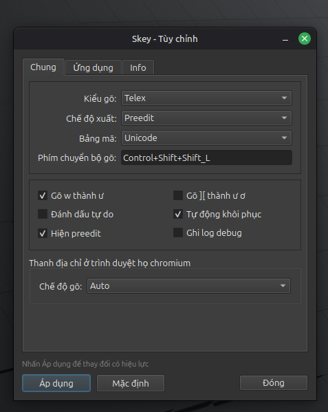
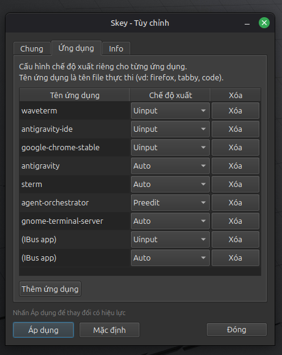
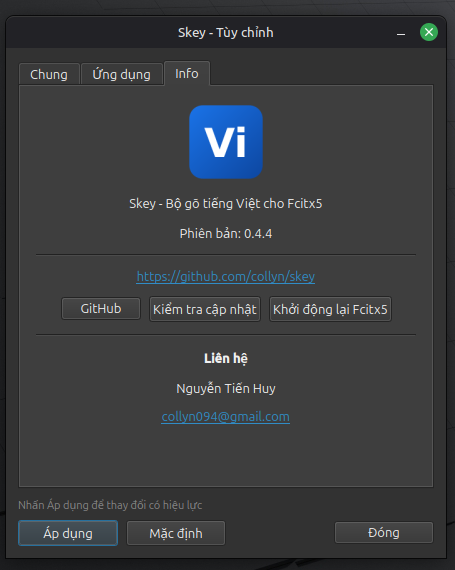

Chuyển từ Windows sang Linux? SKey giúp bạn quên đi nỗi ám ảnh kẹt phím, đường gạch chân giật lag. Trải nghiệm gõ tiếng Việt tức thì, chuẩn xác và mượt mà nhất trên Ubuntu.
curl -fsSL https://collyn.github.io/skey/install.sh | sudo bash && sudo apt install fcitx5-skey
Được thiết kế từ gốc bằng Rust & Fcitx5 nhằm đem lại trải nghiệm hoàn hảo cho người dùng chuyển từ Windows sang Linux.
Loại bỏ hoàn toàn đường gạch chân giật lag tạm thời (preedit). Phím gõ ăn ngay lập tức vào trình duyệt, VS Code, Discord và Terminal.
Tự động ghi đè hoặc tắt gõ tiếng Việt cho từng ứng dụng riêng biệt. Tự tắt khi mở Game/Terminal, tự bật khi mở Chrome/Discord.
Thuật toán biến đổi tiếng Việt tự do (Unikey-style). Cho phép viết tắt, gõ đổi dấu liên tục (`x→s→f→x`) không lo mất chữ.
Bấm cùng phím dấu 2 lần liên tiếp để trả về dạng phím thô (vd: `vãi` → bấm `x` → `vaix`). Tự khôi phục từ thông minh khi gõ sai.
Hoạt động mượt mà trên Ubuntu GNOME, KDE Plasma, Hyprland, Sway. Không cần mò mẫm cấu hình file hệ thống bằng tay.
Đi kèm `fcitx5-skey-settings` đẹp mắt, hỗ trợ chỉnh vị trí dấu thanh (kiểu mới `hoà` / kiểu cũ `hòa`), quy tắc gõ nhanh `w` → `ư` hoặc `][` → `ư ơ`.
Tùy biến bộ gõ trực quan, dễ dàng quản lý chế độ xuất cho từng ứng dụng riêng biệt.

Tùy chọn kiểu gõ Telex, bảng mã Unicode, đặt phím tắt chuyển đổi bộ gõ, bật/tắt phím gõ nhanh
w → ư, ][ → ư ơ và tự động khôi phục từ.

Dễ dàng thêm tên file thực thi (như google-chrome-stable,
gnome-terminal-server, waveterm, v.v.) và chỉ định chế độ gõ riêng biệt
(Uinput / Auto / Preedit) tùy nhu cầu.

Xem phiên bản hiện tại, đường dẫn kho mã nguồn GitHub, tích hợp nút kiểm tra cập nhật mới và khởi động lại Fcitx5 chỉ với 1-click.
Sự khác biệt cốt lõi giữa cơ chế hiển thị gạch chân tạm thời (Preedit) và cơ chế đẩy phím trực tiếp (Direct Commit / Anchoring) của SKey.
| Đặc tính nhập liệu | Gõ Dùng Preedit (Gạch chân) | Gõ Không Cần Preedit (SKey Direct Commit) | Lợi ích thực tế |
|---|---|---|---|
| Cơ chế hiển thị phím | Hiện văn bản gạch chân tạm thời | ✨ Đẩy ký tự tiếng Việt trực tiếp, 0% nét gạch chân | Màn hình sạch sẽ, không rối mắt |
| Độ trễ phản hồi (Input Lag) | Chờ bấm Space/Enter mới commit từ vào ứng dụng | ⚡ Phản hồi tức thì 0ms theo thời gian thực | Nhịp gõ nhanh, mượt mà như UniKey |
| Độ ổn định trên Browser/App | Dễ nhảy con trỏ, rớt chữ ở thanh địa chỉ Chrome/VS Code | 🎯 Gõ chuẩn xác 100% ở mọi khung nhập văn bản | Không mất chữ hay kẹt phím bất ngờ |
| Hiển thị trong Game / Fullscreen | Popup khung preedit đè lên giao diện Game | 🎮 Không hề có popup, tích hợp Per-App Auto Disable | Chơi game & dùng ứng dụng toàn màn hình mượt mà |
| Cảm giác gõ văn bản | Gây gián đoạn thị giác khi gõ văn bản dài | 🚀 Tự nhiên, liền mạch, giữ trọn tập trung | Tăng tốc độ gõ văn bản và làm việc |
Chỉ với 3 bước đơn giản, SKey sẽ tự động sẵn sàng sử dụng trên hệ thống của bạn.
Mở Terminal (bấm Ctrl + Alt + T trên Ubuntu) và dán lệnh sau:
curl -fsSL https://collyn.github.io/skey/install.sh | sudo bash && sudo apt install fcitx5-skey
Lệnh skey-setup sẽ tự động thêm SKey vào Fcitx5 profile, export các biến môi trường
(GTK, QT, XMODIFIERS) và khởi tạo daemon ngầm:
sudo skey-setup && fcitx5 -r -d
Vào System Settings → Keyboard (hoặc Input Devices) → tại mục
Virtual Keyboard chọn Fcitx 5. Bây giờ bạn có thể bấm
Ctrl + Space để gõ tiếng Việt mượt mà!
Đang tải thông tin bản phát hành từ GitHub...
sudo dpkg -i fcitx5-skey_*.deb && sudo apt install -f && sudo skey-setup && fcitx5 -r -d
sudo apt install -y cmake extra-cmake-modules libfcitx5core-dev libfcitx5utils-dev fcitx5 fcitx5-modules qt6-base-dev libqt6svg6-dev libgl1-mesa-dev curl rustc cargo
git clone https://github.com/collyn/skey.git && cd skey && mkdir -p build && cd build && cmake .. -DCMAKE_INSTALL_PREFIX=/usr && make -j$(nproc) && sudo make install && sudo skey-setup && fcitx5 -r -d
Hỗ trợ đầy đủ Telex & VNI với các phím gõ nhanh tiện lợi tương tự EVKey / UniKey.
| Phím Gõ | Kết Quả | Mô Tả |
|---|---|---|
| aa / oo / ee | â, ô, ê | Dấu mũ (mọi vị trí) |
| uw / ww / ow | ư, ơ | Dấu móc (mọi vị trí) |
| aw | ă | Dấu trăng |
| dd | đ | Chữ đét đét (kể cả viết tắt) |
| s / f / r / x / j | á, à, ả, ã, ạ | Dấu thanh sắc, huyền, hỏi, ngã, nặng |
| z | Xóa dấu | Xóa dấu thanh đã gõ |
| w (Tùy chọn) | ư | Gõ w đơn lẻ thành ư |
| ][ (Tùy chọn) | ư, ơ | Gõ phím ngoặc vuông UniKey |
| Phím Gõ | Kết Quả | Mô Tả |
|---|---|---|
| 1 / 2 | sắc, huyền | Dấu sắc và dấu huyền |
| 3 / 4 / 5 | hỏi, ngã, nặng | Dấu hỏi, ngã, nặng |
| 6 | â, ê, ô | Dấu mũ |
| 7 / 8 | ơ, ư / ă | Dấu móc và dấu trăng |
| 9 | đ | Chữ đét (đ) |
| 0 | Xóa dấu | Bỏ dấu thanh |
Một số lưu ý nhanh giúp bạn xử lý ngay nếu gặp vấn đề khi vừa cài trên Ubuntu.
Chạy lại 2 lệnh sau trong Terminal để thiết lập lại môi trường Fcitx 5:
sudo skey-setup && fcitx5 -r -d
Sau đó thử Logout (Đăng xuất) và Login (Đăng nhập) lại vào Ubuntu để session nhận các biến môi trường mới.
Bấm phím tắt ` (dấu backtick cạnh số 1) hoặc mở menu Fcitx5 để chọn Exclude
App. SKey sẽ tự động nhớ cài đặt và tắt gõ tiếng Việt mỗi khi bạn khởi chạy tựa game đó.
Mở Terminal gõ fcitx5-skey-settings hoặc tìm kiếm "SKey Configuration" trong menu ứng
dụng
Ubuntu.